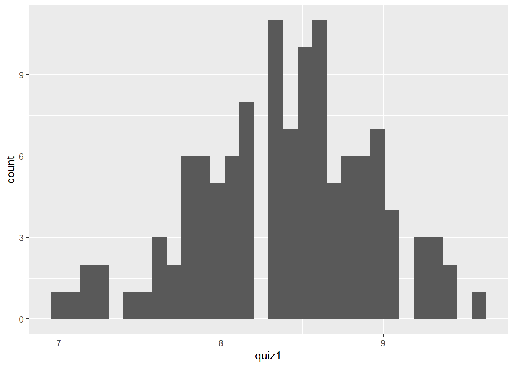
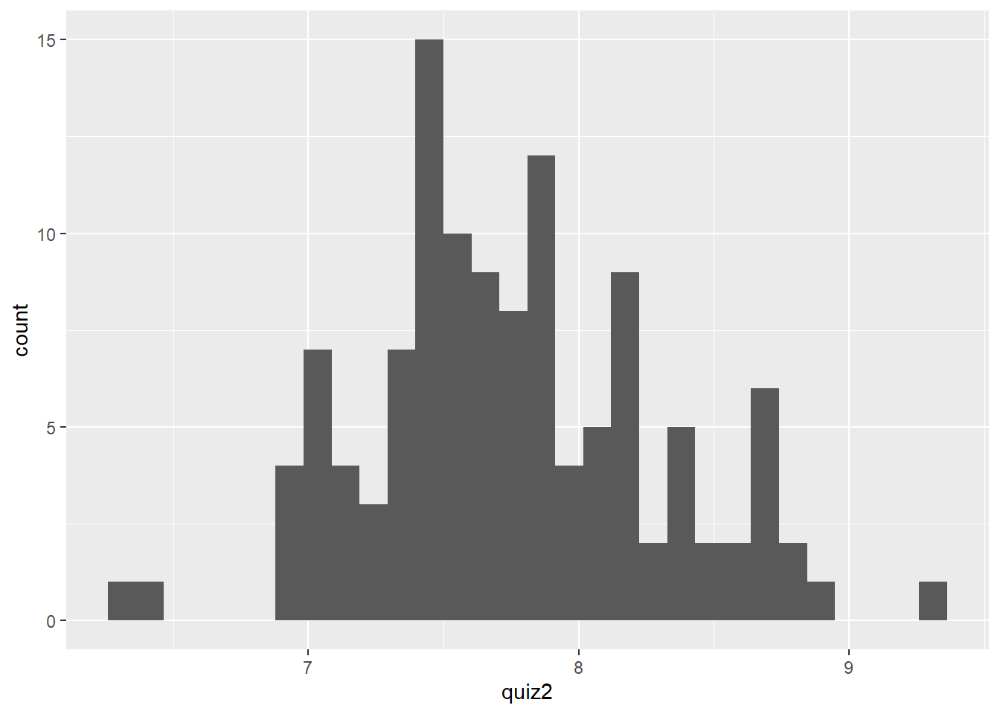
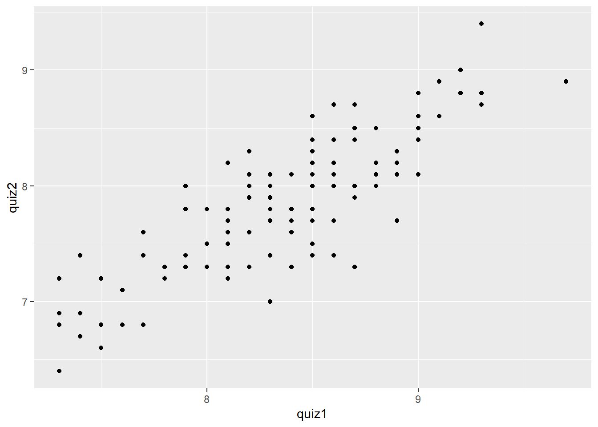
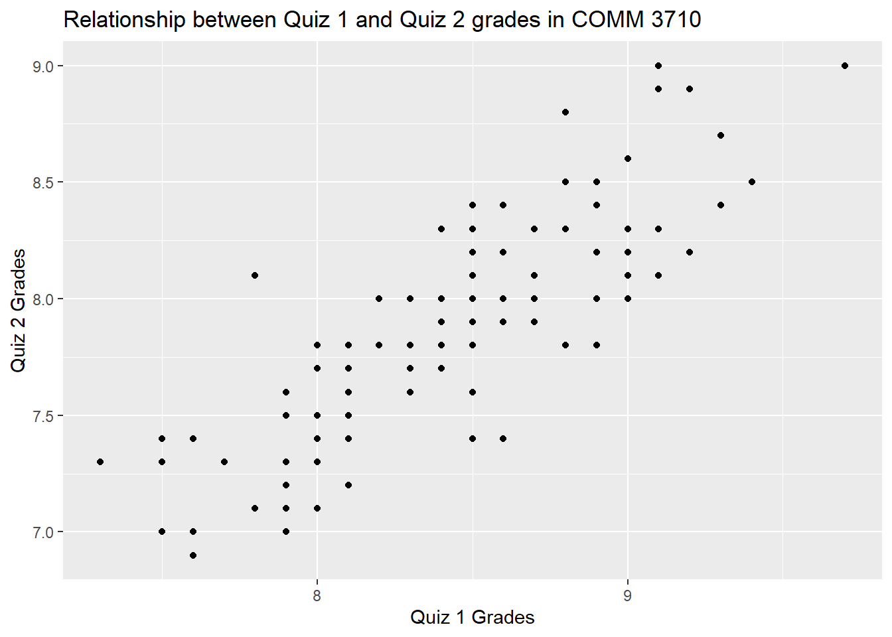

Chapter 5 Graphing with ggplot2
This chapter covers the basics of plotting with the package, ggplot2. This package is contained within a collection of R packages designed for data science known as the tidyverse.
The core tidyverse includes packages that we use in everyday data analysis, including:
ggplot2dplyrtibble
To learn more about the tidyverse, visit tidyverse.org.
To start working with graphs, first install and load the required package. Remember that you only have to install the package once (see Section 2.3.5 to review R packages).
install.packages("tidyverse") # you may not need this command
library(tidyverse)5.1 ggplot2 basics
Building ggplot graphics is typically a layered process. The function that we use is ggplot(). We use the + to add layers to the function.
In the function arguments (i.e., the commands within the parentheses), we define the data set that we want to use with data =, the aesthetics (x- and y-axes) with aes(), and the type of graph with geom.
Figure 5.1: The x- and y-axes on a graph.
In the steps below, we will build the command sequentially. The ggplot() function will not run until the basic layers are in place.
5.1.1 Step 1. Specify data frame
Use the dataframe name to specify the data frame you are using to build the plot. For example, if your data frame is named utilities, this line will be utilities %>% ggplot(...).
dataframe_name %>%
ggplot() 5.1.2 Step 2. Specify x- and y-axes
Next, use aes() to tell R which variable to place on the x- (x_var) and y-axes (y_var). Note that you are adding this argument within the parentheses of the function, ggplot(). Be sure to close all parentheses–not doing so is a common error in R.
dataframe_name %>%
ggplot(aes(x = x_var, y = y_var))If you are only working with only one variable (e.g., plotting a histogram of one variable), you need only specify the x = variable within aes().
5.1.3 Step 3. Add geom
The third step is to tell R what type of graph to create–points, lines, bars, histograms, etc.–by adding the geom layer. This function is layered on to the ggplot() function using the + sign.
For example, if we would like the relationship between two variables to be represented by a scatter plot, we can simply add geom_point().
dataframe_name %>%
ggplot(aes(x = x_var, y = y_var)) + # note the + sign
geom_point()If we are plotting the histogram of one variable, we use geom_histogram().
dataframe_name %>%
ggplot(aes(x = x_var)) + # note the + sign again
geom_histogram()For a bar plot, we use geom_bar().
dataframe_name %>%
ggplot(aes(x = x_var)) + # note the + sign yet again
geom_bar()5.2 Important considerations
The + sign used to add layers must be placed at the end of each line containing a layer. If the + sign is added in the line before the other layer, ggplot2 will return an error message.
# This is the correct way of adding layers
dataframe_name %>%
ggplot( .... ) +
geom_point()
# This will give you an error message (note where the + is)
dataframe_name %>%
ggplot( .... )
+ geom_point()5.3 Learning by doing
Let’s create a graph with a toy data set called quiz.csv. It contains simulated data for Quiz 1 and 2 scores of 120 students. There data set contains three variables:
id: Student IDquiz1: Quiz 1 scoresquiz2: Quiz 2 scores
First, make sure you set the working directory correctly on your computer and load the packages.
Download this data set (right click and select Save As…) and read it into R.
quiz <- read_csv("quiz.csv")5.3.1 Histograms
Let us examine the distribution of grades for Quiz 1 using a histogram.
To better understand what R is doing step-by-step, run these lines one at a time and see what happens in the Plots panel in RStudio.
# 1: Try this command first
quiz %>%
ggplot()
# 2: Then try this one
quiz %>%
ggplot(aes(x = quiz1))
# 3: And, finally, try this
quiz %>%
ggplot(aes(x = quiz1)) +
geom_histogram()As the exercise shows, the complete command is the third one.
quiz %>%
ggplot(aes(x = quiz1)) +
geom_histogram()
To do the same for Quiz 2 grades, simply change the x-axis specification in aes().
quiz %>%
ggplot(aes(x = quiz2)) +
geom_histogram()
5.3.2 Scatter plots
What if we want to examine whether there is a relationship between Quiz 1 and Quiz 2 scores? You might hypothesize that the scores on Quizzes 1 and 2 should be positively correlated.
To examine this graphically, we can use a scatter plot, which depicts the relationship between two quantitative variables. In this case, we use geom_point() to tell R that we want a graph with points.
quiz %>%
ggplot(aes(x = quiz1, y = quiz2)) +
geom_point() 
5.3.3 Adding axes labels and plot titles
No graph is complete without axis labels and a title. We can add axis labels and a plot title with the labs() layer. Again, it is important to add this layer by using the + sign.
quiz %>%
ggplot(aes(x = quiz1, y = quiz2)) +
geom_point() +
labs(x = "Quiz 1 Grades",
y = "Quiz 2 Grades",
title = "Relationship between Quiz 1 and Quiz 2 grades in COMM 3710")
5.4 Additional resources for graphing
This guide includes only the basics of graphing with ggplot2. If you have questions that are not covered in this guide, the R Graphics Cookbook is a practical guide that provides recipes for quickly generating high-quality graphs.